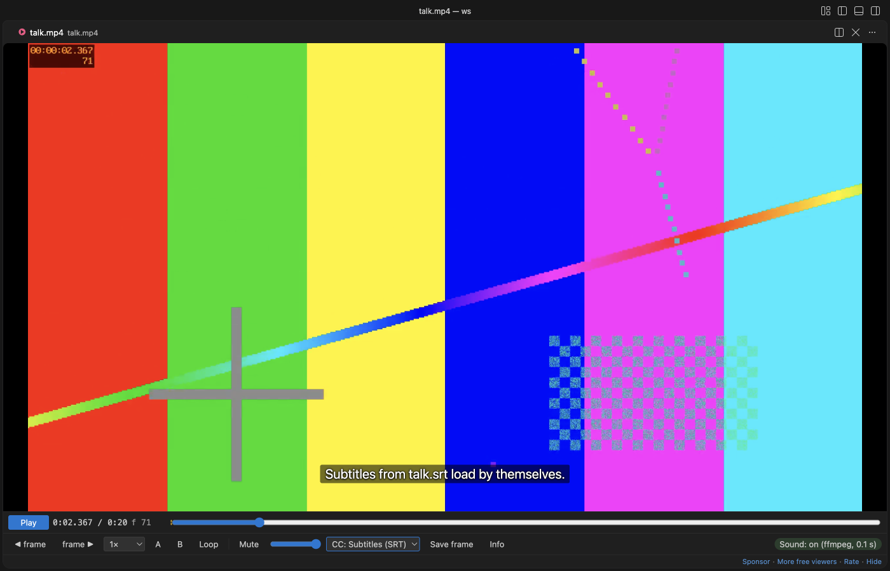

Open files in VS Code and Cursor / Media
Watch a video with its .srt or .vtt subtitles in VS Code
The video preview built into VS Code has no subtitle option. Video Preview with Sound plays MP4, MOV and M4V files with their AAC sound, and MKV or WebM with ffmpeg. It loads subtitles from an .srt or .vtt file with the same name, such as talk.srt next to talk.mp4. Press C or use the CC menu to switch tracks or load another file. Subtitles are free. Zovo Pro (USD 19 once) adds GIF and MP4 clip export, frame export and a contact sheet, with 3 free tries each.
Free, MIT license. Extension ID zovo.video-preview-with-sound, version 0.3.5. Needs VS Code 1.90.0 or newer.

Steps in VS Code
- Install Video Preview with Sound from the Marketplace, or press Ctrl+P (Cmd+P on macOS) and run
ext install zovo.video-preview-with-sound. - Put the subtitle file next to the video with the same name, such as
talk.srtortalk.vttfortalk.mp4. Language tags such astalk.en.srtortalk.pt-BR.vttwork too. - Click the video in the Explorer. If VS Code asks which editor to use, pick "Video Preview with Sound". The first subtitle file found shows at the bottom of the picture.
- Press C to turn the subtitles off or on, or use the CC menu in the control bar to pick another track. Up to 20 subtitle files per video are listed.
- To use a subtitle file with another name or in another folder, pick "Load subtitles..." in the CC menu.
- Use the frame buttons, the speed menu and the A-B loop to check the timing. The time and the frame number show in the control bar.
Where Zovo Pro saves time
Playback with sound, subtitles, frame stepping, speed from 0.1x to 4x, the A-B loop, picture-in-picture, resume and Save frame are free. MKV, WebM, AVI and ProRes need your own ffmpeg to play.
When you want to share the part of a talk or a bug video that matters, clip export saves the A-B part as a GIF made inside the player, up to 960 px and 60 seconds, or as an MP4 cut by your ffmpeg. The clip holds the picture, and an MP4 also holds the sound. Text from the .srt file is not burned into it. The other two Pro tools save frames as numbered PNG files and save a contact sheet of the whole video.
With Export a Clip as GIF or MP4 (Zovo Pro)
- Set the start with A and the end with B.
- Press Clip and pick a GIF size, or an MP4 (exact or fast copy), then where to save it.
- Esc stops the export. A stopped export or a cancelled dialog uses no try.
Export a Clip as GIF or MP4 works 3 times on your computer before it asks for a license, and a try counts only when you get a result. Opening a file shows no popup and no countdown.
Zovo Pro costs USD 19 once. It is not a subscription, and it turns on the Pro tools in every Zovo extension, not only Video Preview with Sound. After a card payment (Stripe) your license key shows on the next page. In VS Code, run "Zovo Pro: Enter Zovo Pro license key" from the Command Palette and paste it. The key is checked on your computer, with no network call. With GitHub Sponsors, pick the "$19 one time" tier, then run "Zovo Pro: I already paid: unlock with GitHub Sponsors" and sign in with the same GitHub account. With PayPal, send USD 19 with "Zovo Pro" in the note and the key comes by email within a day.
A team of 5: USD 59 once, by card or by PayPal. Every rule and every Pro tool is on the Zovo Pro page.
Steps in Cursor, Windsurf or VSCodium
- Open the Extensions view with Ctrl+Shift+X (Cmd+Shift+X on macOS).
- Search for
zovo.video-preview-with-soundand click Install. Cursor, Windsurf and VSCodium install from Open VSX, where it is published aszovo/video-preview-with-sound. - If your editor has no gallery, download the .vsix from the Open VSX page and run "Extensions: Install from VSIX...".
- Then use it the same way as in VS Code.
What Video Preview with Sound handles
- SRT and WebVTT files in UTF-8, with a Latin-1 fallback for older files.
- Language tags in the file name, such as
.enor.pt-BR, shown as track names. - Italic tags and other formatting codes in the text, which are removed so the line stays readable.
- MP4, MOV, M4V, MKV, WebM and AVI videos.
What it does not do
- Subtitles show as plain text at the bottom of the picture, with no styling and no positions.
- A subtitle file can be at most 5 MB and 20,000 cues, and at most 20 files are listed per video.
- Subtitle tracks inside the video file are not read. Extract them to an .srt file first, for example with ffmpeg.
- Turn off
videoPreview.subtitles.autoLoadto keep subtitles off until you pick a track.
Other options
- VLC. A free desktop player. It loads an .srt file with the same name as the video by itself.
- mpv. A free, keyboard driven player that also loads a subtitle file with the same name.
Install counts and Open VSX status were checked on 13 November 2026. Descriptions in quotes are the extensions' own.
Questions
Why do no subtitles show?
The file name must match the video name, with an optional language tag, such as clip.srt or clip.en.srt for clip.mp4. Otherwise use CC, then "Load subtitles...".
Can it show subtitles that are inside an MKV file?
No. It reads only separate .srt and .vtt files.
Do I need ffmpeg?
Not for MP4, MOV and M4V with AAC sound. MKV, WebM, AVI and video VS Code cannot decode need it.
Does it work in Cursor or Windsurf?
Yes. Cursor, Windsurf and VSCodium install extensions from Open VSX. Search for the extension in their Extensions view and install it there.
More about Video Preview with Sound
Read the Video Preview with Sound page for every feature and setting, or the source code on GitHub.
Related guides
- MP4 Video Player & Preview with Sound on the VS Code Marketplace (also on Open VSX). Plays MP4, MOV, MKV and WebM files in VS Code, with sound.
- Why VS Code plays MP4 with no sound, and how to fix it
- Extract frames from a video in VS Code
- Make a video contact sheet
- Play MOV, MKV and WebM videos in VS Code
Zovo Pro and support
Zovo Pro: USD 19 once, every Zovo viewer. It turns on the Pro tools in this extension and in the other Zovo extensions you use. The free features stay free.
After a card payment your license key shows on the next page. Paste it with the command "Zovo Pro: Enter a key".
You can also support the work with no Pro:
Need your format supported?
Open a format request with a sample file, and I reply there whether it can be done. For USD 299 once, through this GitHub Sponsors tier, I add your file format or a missing feature to this extension, with tests, within 7 days.